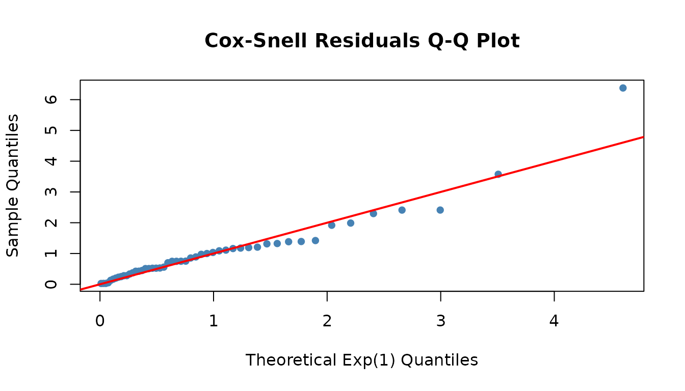
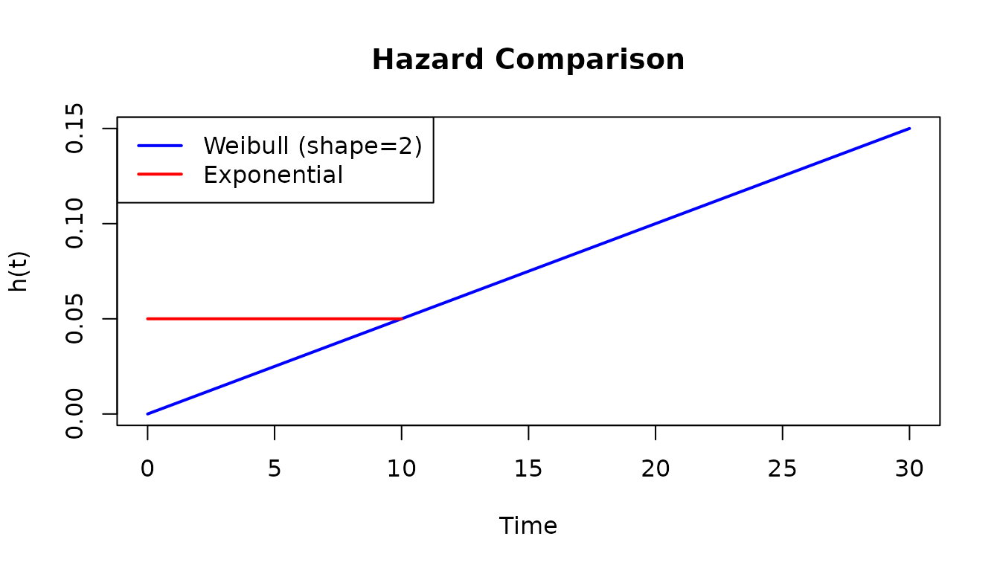
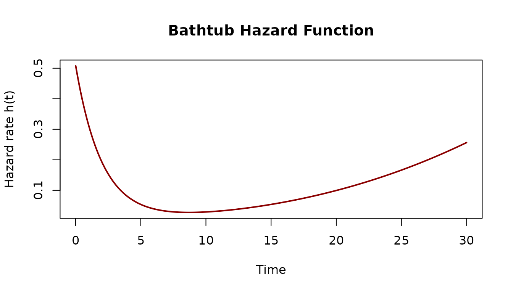
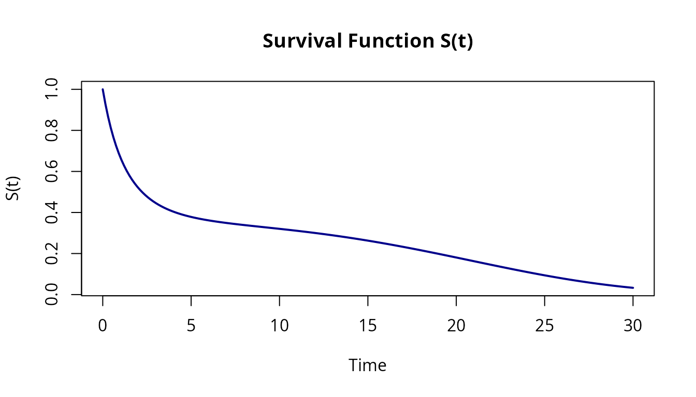
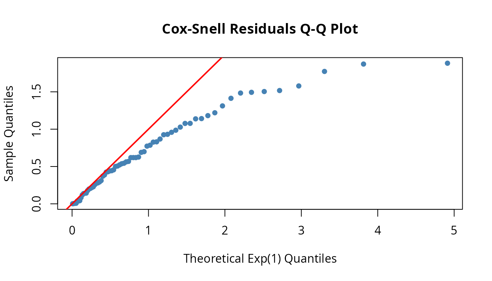

The Problem
Standard parametric survival models force you to choose from a short list of hazard shapes: constant (exponential), monotone power-law (Weibull), exponential growth (Gompertz). But real failure patterns rarely cooperate:
- Ceramic capacitors exhibit wear-out that accelerates with age — the failure rate climbs faster than any power law.
- Software systems follow a bathtub curve: early crashes from latent bugs, a stable period, then increasing failures as dependencies rot.
- Post-surgical patients face high initial risk that drops sharply, then slowly rises again as long-term complications emerge.
Each of these demands a hazard function that standard families cannot express. You can reach for semi-parametric methods (Cox regression), but then you lose the ability to extrapolate, simulate, or compute closed-form quantities like mean time to failure.
The Idea
flexhaz takes a different approach: you write
the hazard function, and the package derives everything
else.
Given a hazard (failure rate) function , the full distribution follows:
If you can express
as an R function of time and parameters, flexhaz gives you
survival curves, CDFs, densities, quantiles, random sampling,
log-likelihoods, MLE fitting, and residual diagnostics —
automatically.
Installation
# From r-universe
install.packages("flexhaz", repos = "https://queelius.r-universe.dev")Your First Distribution
Let’s start with the simplest case: the exponential distribution with constant failure rate.
# Exponential with failure rate lambda = 0.1 (MTTF = 10 time units)
exp_dist <- dfr_exponential(lambda = 0.1)
print(exp_dist)
#> Dynamic failure rate (DFR) distribution with failure rate:
#> function (t, par, ...)
#> {
#> rep(par[[1]], length(t))
#> }
#> <bytecode: 0x55b0cf3855b0>
#> <environment: 0x55b0cf387930>
#> It has a survival function given by:
#> S(t|rate) = exp(-H(t,...))
#> where H(t,...) is the cumulative hazard function.Get Distribution Functions
All distribution functions follow a two-step pattern — the method returns a closure that you then call with time values:
# Get closures
S <- surv(exp_dist)
h <- hazard(exp_dist)
f <- density(exp_dist)
# Evaluate at specific times
S(10) # P(survive past t=10) = exp(-0.1 * 10) ~ 0.37
#> [1] 0.3678794
h(10) # Hazard at t=10 = 0.1 (constant for exponential)
#> [1] 0.1
f(10) # PDF at t=10
#> [1] 0.03678794You can verify these analytically: , the hazard is constant at , and .
Fitting to Data
Now let’s fit a model to survival data using maximum likelihood estimation.
set.seed(123)
n <- 50
df <- data.frame(
t = rexp(n, rate = 0.08), # True lambda = 0.08
delta = rep(1, n) # All exact observations
)
head(df)
#> t delta
#> 1 10.5432158 1
#> 2 7.2076284 1
#> 3 16.6131858 1
#> 4 0.3947170 1
#> 5 0.7026372 1
#> 6 3.9562652 1Maximum Likelihood Estimation
# Template with no parameters (to be estimated)
exp_template <- dfr_exponential()
solver <- fit(exp_template)
result <- solver(df, par = c(0.1)) # Initial guess
coef(result)
#> [1] 0.07077333
# Compare to analytical MLE: lambda_hat = n / sum(t)
n / sum(df$t)
#> [1] 0.07077323The numerical MLE matches the closed-form solution to five decimal places. Both estimate , which is consistent with the true value of 0.08 given the sampling variability at .
Model Diagnostics
Check model fit using Cox-Snell residuals (should follow the Exp(1) diagonal):
fitted_dist <- dfr_exponential(lambda = coef(result))
qqplot_residuals(fitted_dist, df)
Working with Censored Data
Real survival data often includes censoring —
observations where the exact failure time is not directly observed. The
flexhaz package uses a delta column to encode
three types of observation:
delta |
Meaning | Log-likelihood contribution |
|---|---|---|
1 |
Exact failure | |
0 |
Right-censored (survived past ) | |
-1 |
Left-censored (failed before ) |
Right-Censoring
Right-censoring is the most common type — the subject was still alive (or the device was still running) when observation ended.
df_censored <- data.frame(
t = c(5, 8, 12, 15, 20, 25, 30, 30, 30, 30),
delta = c(1, 1, 1, 1, 1, 0, 0, 0, 0, 0) # Last 5 right-censored at t=30
)
solver <- fit(dfr_exponential())
result <- solver(df_censored, par = c(0.1))
coef(result)
#> [1] 0.02439454The censored MLE properly accounts for the five units that survived past . You can verify: the analytical MLE for censored exponential data is where is the number of failures, giving — exactly what the optimizer returns.
Left-Censoring
Left-censoring arises when we know failure occurred before an inspection time, but not exactly when. This is common in periodic-inspection studies: you check a device at time and discover it has already failed.
df_left <- data.frame(
t = c(5, 10, 15, 20),
delta = c(-1, -1, 1, 0) # left-censored, left-censored, exact, right-censored
)
solver <- fit(dfr_exponential())
result <- solver(df_left, par = c(0.1))
coef(result)
#> [1] 0.07184419This dataset mixes all three observation types: two left-censored, one exact failure at , and one right-censored at . The estimate is higher than a right-censored-only estimate because the left-censored observations provide evidence of earlier failures. All three types can coexist in the same dataset — the log-likelihood sums the appropriate contribution for each observation.
Custom Column Names
By default, flexhaz looks for columns named
t (observation time) and delta (event
indicator). When your data uses different column names — as is common
with clinical datasets — use the ob_col and
delta_col arguments:
clinical_data <- data.frame(
time = c(5, 8, 12, 15, 20),
status = c(1, 1, 1, 0, 0)
)
dist <- dfr_exponential()
dist$ob_col <- "time"
dist$delta_col <- "status"
solver <- fit(dist)
result <- solver(clinical_data, par = c(0.1))
coef(result)
#> [1] 0.05The estimate equals , confirming that the column mapping works correctly.
You can also set custom columns at construction time via
dfr_dist():
Beyond Exponential: Weibull
The exponential assumes constant failure rate. For increasing or decreasing failure rates, use Weibull:
# Weibull with increasing failure rate (wear-out)
weib_dist <- dfr_weibull(shape = 2, scale = 20)
# Compare hazard functions
plot(weib_dist, what = "hazard", xlim = c(0, 30), col = "blue",
main = "Hazard Comparison")
plot(dfr_exponential(lambda = 0.05), what = "hazard", add = TRUE, col = "red")
legend("topleft", c("Weibull (shape=2)", "Exponential"),
col = c("blue", "red"), lwd = 2)
Weibull shape parameter interpretation:
- shape < 1: Decreasing hazard (infant mortality, burn-in failures)
- shape = 1: Constant hazard (exponential)
- shape > 1: Increasing hazard (wear-out, aging)
The Real Power: Custom Hazards
Where flexhaz truly shines is modeling
non-standard hazard patterns that no built-in
distribution can express.
Define a bathtub hazard
Three additive components: exponential decay (infant mortality), constant baseline (useful life), and power-law growth (wear-out).
bathtub <- dfr_dist(
rate = function(t, par, ...) {
a <- par[[1]] # infant mortality magnitude
b <- par[[2]] # infant mortality decay
c <- par[[3]] # baseline hazard
d <- par[[4]] # wear-out coefficient
k <- par[[5]] # wear-out exponent
a * exp(-b * t) + c + d * t^k
},
par = c(a = 0.5, b = 0.5, c = 0.01, d = 5e-5, k = 2.5)
)Plot the hazard curve
h <- hazard(bathtub)
t_seq <- seq(0.01, 30, length.out = 300)
plot(t_seq, sapply(t_seq, h), type = "l", lwd = 2, col = "darkred",
xlab = "Time", ylab = "Hazard rate h(t)",
main = "Bathtub Hazard Function")
Plot the survival curve
plot(bathtub, what = "survival", xlim = c(0, 30),
col = "darkblue", lwd = 2,
main = "Survival Function S(t)")
Simulate data and fit via MLE
# Generate failure times, right-censored at t = 25
set.seed(42)
samp <- sampler(bathtub)
raw_times <- samp(80)
censor_time <- 25
df <- data.frame(
t = pmin(raw_times, censor_time),
delta = as.integer(raw_times <= censor_time)
)
cat("Observed failures:", sum(df$delta), "out of", nrow(df), "\n")
#> Observed failures: 68 out of 80
cat("Right-censored:", sum(1 - df$delta), "\n")
#> Right-censored: 12
# Fit the model
solver <- fit(bathtub)
result <- solver(df,
par = c(0.3, 0.3, 0.02, 1e-4, 2),
method = "Nelder-Mead"
)Inspect the fit
cat("Estimated parameters:\n")
#> Estimated parameters:
print(coef(result))
#> [1] 0.4828059584 0.6478481588 0.0128496924 0.0003329348 1.7388288598
cat("\nTrue parameters:\n")
#>
#> True parameters:
print(c(a = 0.5, b = 0.5, c = 0.01, d = 5e-5, k = 2.5))
#> a b c d k
#> 0.50000 0.50000 0.01000 0.00005 2.50000With five parameters and only 80 observations, the optimizer recovers the general shape but not every parameter exactly. In particular, and trade off: a smaller exponent with a larger coefficient can produce a similar wear-out curve. The Q-Q plot below is the real test of fit quality.
Residual diagnostics
fitted_bathtub <- dfr_dist(
rate = function(t, par, ...) {
par[[1]] * exp(-par[[2]] * t) + par[[3]] + par[[4]] * t^par[[5]]
},
par = coef(result)
)
qqplot_residuals(fitted_bathtub, df)
Points near the diagonal indicate the model captures the failure pattern well.
Built-in Distributions
For common parametric families, the package provides optimized constructors with analytical cumulative hazard and score functions:
| Constructor | Hazard Shape | Parameters | Use Case |
|---|---|---|---|
dfr_exponential(lambda) |
Constant | failure rate | Random failures, useful life |
dfr_weibull(shape, scale) |
Power-law | shape , scale | Wear-out, infant mortality |
dfr_gompertz(a, b) |
Exponential growth | initial rate, growth rate | Biological aging |
dfr_loglogistic(alpha, beta) |
Non-monotonic (hump) | scale, shape | Initial risk that diminishes |
Use these when a standard family fits your problem — they include analytical derivatives for faster, more accurate MLE.
Key Functions
| Function | Purpose |
|---|---|
hazard() |
Get hazard (failure rate) function |
surv() |
Get survival function S(t) |
density() |
Get PDF f(t) |
cdf() |
Get CDF F(t) |
inv_cdf() |
Get quantile function |
sampler() |
Generate random samples |
fit() |
Maximum likelihood estimation |
loglik() |
Get log-likelihood function |
residuals() |
Model diagnostics (Cox-Snell, Martingale) |
plot() |
Visualize distribution functions |
qqplot_residuals() |
Q-Q plot for goodness-of-fit |
Where to Go Next
-
vignette("reliability_engineering")— Five real-world case studies -
vignette("failure_rate")— Mathematical foundations of hazard-based modeling -
vignette("custom_distributions")— The three-level optimization paradigm -
vignette("custom_derivatives")— Analytical score and Hessian functions